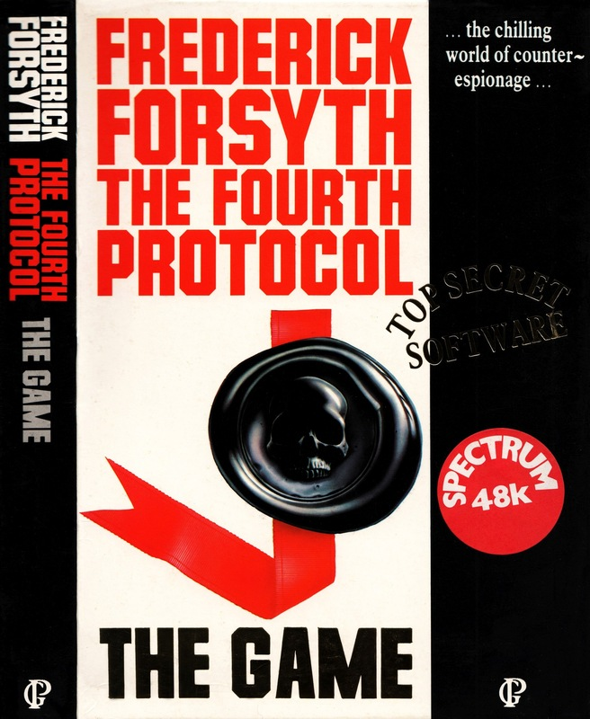
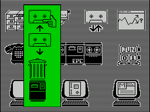

The Fourth Protocol


{kind=link}

| Publisher: | Hutchinson Computer Publishing |
| Price: | £12.95 |
| Year: | 1985 |
| Source: | CRASH, Issue 19 |

If the last book you read was the Beano annual 1978 then you may not be aware of the standing of The Fourth Protocol (the book) in the literary world — where it was received to great popular acclaim. Much of the panache of that Frederick Forsyth novel dealing with the murky depths of counterespionage is retained in this computer game. It boasts a development team of games designers, graphic artists and programmers, and on loading you can well believe it. The game’s concept has been very well implemented and the graphics are attractive and impressive.
The plot goes like this: in a remote cottage just outside Moscow a Soviet General Secretary and the British traitor Kim Philby plot the most audacious offensive of the cold war, codenamed Plan Aurora. The plan is to destabilize Britain and force the disintegration of NATO. With the NATO pact out of the way Soviet forces would then be free to overthrow Western Europe. The idea is to renege on the Fourth Protocol, a part of the Non-Proliferation Treaty signed by the 1968 nuclear powers of Britain, USA and Russia. This involves the smuggling of a nuclear device into the UK and exploding it there just before the 1987 General Election. A KGB disinformation program will ensure the nuclear disaster is blamed on an American military installation. The election of a hard left government committed to withdrawal from NATO will lead to a totalitarian state in Britain. Your role is to play John Preston, MI5 investigator, who must uncover Plan Aurora and ensure that its insidious results are never realized.

Even as you take up your post as head of CI(A) a burglary is taking place somewhere in England. The burglar steals the Glen Diamonds but, more important, disturbs some secret NATO documents. The MOD mandarins receive these files and immediately get the Paragon Committee, whose sole concern is the source of the lost documents, onto the case. Your task is to find who is leaking the secrets, to whom they are being leaked, and why. Meantime, however, you must run a busy secret service department from your Cencom control network, maintaining as low a public profile as possible.
Nato Documents is the first of three parts on the tape and is an adventure/strategy game which uses an icon driven control system, i.e. you point to what you want and then press ENTER to reveal further options. The heart of the game is the Cencom display which allows access to news reports, sitreps (situation reports), files, telephone calls (both in and out), surveillance of suspects, and self-assessment to see how you are getting on in your role as head of CI(A). By way of this series of menus and sub-menus the player can effectively control the whole organisation: all its in- and outgoings of both personnel and messages. A file can be read into your Cencom system’s memory over the telephone from Blenheim, a building which contains the vast archives of MI5. As you might expect, however, codes must be deciphered and entered correctly.
Playing, the first thing you might like to do is to track down your personal list of telephone numbers as there is some important information available to you at Blenheim. You will need your one-time decoding sheets in order to enter the code of the week (which, strangely enough, lasted well over a month when I played it). This allows you to download into your Cencom console valuable lists of Cabinet and Foreign Office staff who had access to the stolen documents. Those staff with access to photocopying facilities are shown — which may be significant, as the stolen documents were photocopies. All the while you must concern yourself with the running of a busy secret service department and this can even go as far as probing the private lives of the workers in your office. Miss Abbs has a fling with a foreign diplomat and you must decide what you are going to do about it, if anything. More important is finding out who leaked the NEC privatization documents to the national press and dealing with the culprit.
An important part of security is surveillance and choosing the surveillance icon allows you the option of allocating up to 25 watchers to any one suspect, and withdrawing some or all of them as their activities become less critical. The assessment icon is also of great interest to the player as it reports back just how well the player is doing. Your prestige rating will change with the competence of your decisions and has a tangible effect on how many watchers MI5 are prepared to allocate you. These decisions are realistically difficult and you must take care not to air a scandal in public or feed the press any intrigue.
The Fourth Protocol: The Game consists of three independent programs — The Nato Documents, The Bomb and The SAS Assault. Secret codes are given when programs 1 and 2 are successfully solved and these words allow entry to the next part. The different parts make up a game which is truly original. It has been exceptionally well planned in that it is very easy to play right from the start and keeps your interest throughout.
COMMENTS
| Difficulty: | Intricate plot |
| Graphics: | Good icon graphics |
| Presentation: | Professionally designed |
| Input facility: | Icon driven, sometimes has a tendency for an annoying auto repeat |
| Response: | Instantaneous |
| General rating: | A highly playable and addictive adventure/strategy game |
| Atmosphere: | 9 |
| Vocabulary: | N/A |
| Logic: | 9 |
| Addictive quality: | 9 |
| Overall: | 9 |